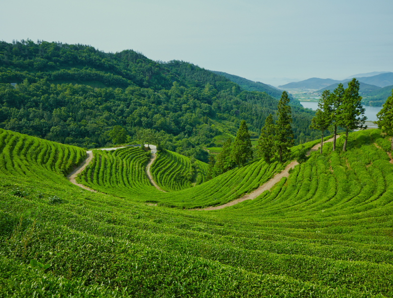

One unique way to appreciate culture is by delving into its history. Korean tea history dates back to the 7th century when tea culture started in Korea. It is documented that tea seeds were brought from China and planted in the southern region, particularly on Mount Jiri, the highest mountain in the south.
As a result, the regions of Yeongnam and Honam, centered around Mount Jiri, became the homeland of Korean tea. The climate and geographical conditions in these areas were well-suited for the cultivation of tea trees, and they have remained the primary tea cultivation regions in Korea to this day.

HANCHA,
Located in the Southern Part of the Korean Peninsula
Korea has diverse climate conditions based on its geographical location. HANCHA is situated in the southern part of the Korean Peninsula, which is the primary region for tea cultivation.